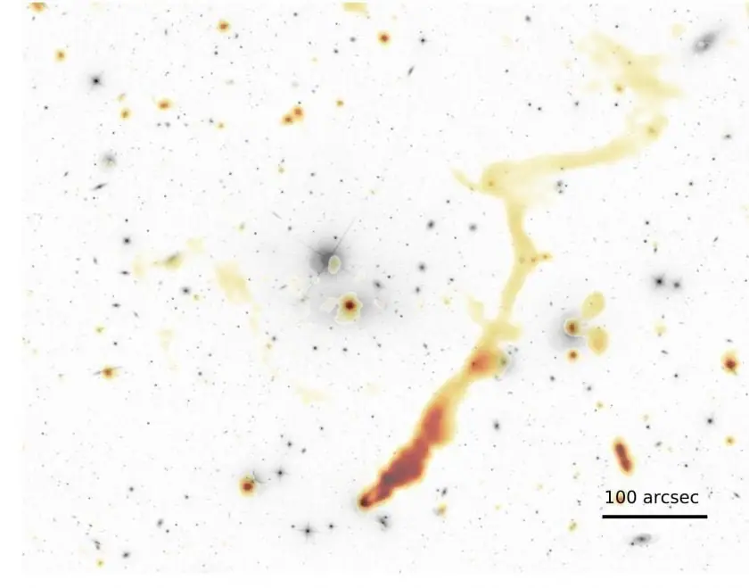

Articles ·
Astronomers Just Found 300,000 Hidden Galaxies in Just a Tiny Patch of Sky
www.sciencealert.com / MIKE MCRAE / 20 FEB 2019
The Universe just got a little more crowded with the discovery of more than 300,000 potential galaxies in a tiny corner of the northern sky.
A release of data gathered by the Low Frequency Array (LOFAR) telescope network in Europe has added extraordinary new levels of detail to the map of radio waves across the cosmos, inspiring dozens of studies on everything from magnetic fields to black holes.
It’s moments like these we should be grateful of our relative blindness to the radiance of the night sky – at least, if we want sleep at night. Invisible to the human eye, the Universe is in fact ablaze with low frequency waves produced by accelerating particles and electromagnetic fields.
Measuring that radio hum requires some pretty sensitive equipment. LOFAR’s array of 20,000 antennas scattered across 48 stations in the Netherlands and abroad is like having a huge radio-sensitive eye on our planet’s surface.
Among its many tasks is an intensive survey of the northern night sky at radio frequencies of around 120 to 168 megahertz, which is expected to provide new information on a variety of softly shining astronomical phenomena.
So far only about 20 percent of the survey has been completed, and of that, scientists all over the globe can only access about 10 percent of available data. That might not sound like much, but they’re clearly having a field day with it.
The journal Astronomy and Astrophysics has just published 26 studies based on this initial data release, covering quasars, blazars, black holes, and intergalactic electromagnetic fields.
One of the big reveals in the mosaic of sources are 325,694 points where the glow of radio waves surges to at least five times the background noise. Around 70 percent of these can be linked with an optical signal, so it’s fairly safe to say these bright spots represent galaxies we can add to our cosmic roadmap.
It’s no secret that galaxies of sufficient size often harbour gargantuan black holes that swallow everything within reach with such temerity, they vomit jets of matter shining in radio waves. What hasn’t been clear is just how strict this rule is, and whether these core black holes ever manage to clear their plate.
This new data is helping persuade scientists that these monsters have relentless appetites.
“LOFAR has a remarkable sensitivity and that allows us to see that these jets are present in all of the most massive galaxies, which means that their black holes never stop eating,” says astrophysicist Philip Best from the University of Edinburgh.
Pinpointing the locations of new galaxies doesn’t just help us understand their inner structures, it provides a valuable tool to understanding the vast stretches of nothingness in between.
Usually, radio waves are produced by the turbulence stirred up as galaxies collide.
“What we are beginning to see with LOFAR is that in some cases, clusters of galaxies that are not merging can also show this emission, albeit at a very low level that was previously undetectable,” says astrophysicist Annalisa Bonafedefrom the University of Bologna.
“This discovery tells us that besides merger events, there are other phenomena that can trigger particle acceleration over huge scales.”

Above: Galaxy cluster Abell 1314 as imaged by LOFAR. The grey indicates visible light, while the orange hues show the ‘hidden’ radio emissions, completely changing the picture.
The sensitivity of LOFAR’s eye on the sky has also helped researchers trace out the faint magnetic fields that have been predicted to exist in intergalactic space but until now too hard to detect.
“Magnetic fields pervade the cosmos, and we want to understand how this happened,” says University of Hamburg astronomer Shane O’Sullivan.
Closer to home, the sheer magnitude of raw data collected by surveys such as this demands new ways to process information that are not just time efficient, but also aren’t chewing through too much power.
The data management collaborative, SURF, is currently storing more than 20 petabytes of LOFAR’s information, which is still only a little more than half of the total.
“We have been working together with SURF in the Netherlands to efficiently transform the massive amounts of data into high-quality images,” says cosmologist Timothy Shimwell from the Netherlands Institute for Radio Astronomy and Leiden University.
SURF’s technology and processes makes relatively short work of crunching the numbers into something that can be used by diverse teams of researchers. What’s more, it’s all run on 100 percent renewables.
This is just the beginning. There’s plenty more sky left to uncover, which in the end could reveal around 15 million new sources of radio wave emissions, many stretching back to the dawn of the Universe.
This is one bright future for the LOFAR sky survey.
This research was published in Astronomy and Astrophysics.